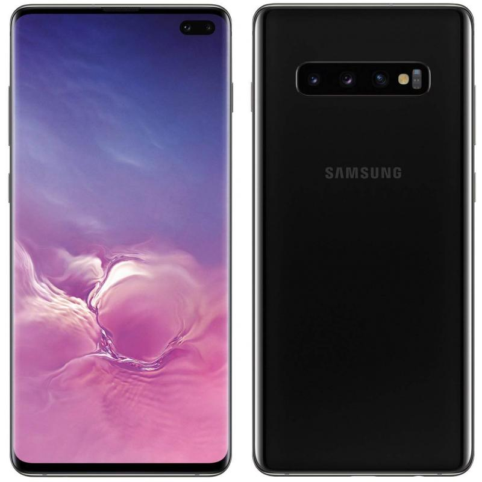

El teléfono inteligente de próxima generación con pantalla inteligente Infinity-O Display
Consta de la eliminacion de las distracciones para una experiencia de visualización cinematográfica.
Al utilizar un corte láser preciso, la cámara se ha escondido discretamente dentro de la pantalla sin
sacrificar la calidad de la foto.

Seguridad mediante huella digital
El escáner de huellas digitales de atrás hacia adelante, creando un revolucionario sensor en pantalla.
Usando pulsos ultrasónicos, detecta las crestas 3D y los valles de su huella digital, por lo que solo
usted puede acceder a su teléfono. Es seguro y conveniente, incluso te permite desbloquear, arrastrar y
mantener presionado para abrir la aplicación que deseas.
Pantalla
La pantalla Dynamic AMOLED de la próxima generación cuenta con la certificación HDR10 +, y ofrece mapeo
dinámico de tonos para obtener colores y contrastes increíblemente reales en cada escena, incluso en las
oscuras. Y la pantalla más brillante lo ayuda a verlo claramente incluso a plena luz del día. Junto con
altavoces estéreo y Dolby Atmos, la experiencia es realmente inmersiva.
Un compuesto fluido único en Dynamic AMOLED reduce la luz azul dañina sin cambiar el color de lo que está
en la pantalla. Mire o juegue hasta altas horas de la noche con menos fatiga visual para una mejor noche
de sueño.
Características y especificaciones
Pantalla:
6.4 pulgadas, primera pantalla de celular con certificación HDR+ (Dynamic OLED)
Resolución:
3,040x1,440 pixeles
Procesador:
2.84GHz Snapdragon 855 / 2.73GHz Exynos 9820, dependiendo del mercado
RAM:
8GB (o 12GB en versión de cerámica)
Almacenamiento:
128GB (512GB o 1TB en versión de cerámica)
Ranura microSD:
Sí (certificada hasta 512GB)
Batería:
4,100mAh (no extraíble)
Sistema operativo:
Android Pie (One UI)
Carga rápida:
Quick Charge 2.0
Carga inalámbrica:
Sí con PowerShare (carga reversible)
Conectividad:
Wi-Fi 6 (2.4 y 5GHz) MU-MIMO, Bluetooth 5.0
Samsung Pay:
Sí, a través de NFC y MST
Funciones de desbloqueo:
Lector de huellas en pantalla, reconocimiento facial, patrón, PIN, contraseña
Cámara trasera:
Triple de 12 megapixeles (variable de f/1.5 y f/2.4) con estabilización óptica
(77 grados); gran angular de 16 megapixeles (f/2.2 de 12 grados); telefoto de 12
megapixeles (f/2.4 de 45 grados) con estabilización óptica
Cámara frontal:
10 megapixeles (f/1.9) y 8 megapixeles (f/2.2) de profundidad
Resistente al agua:
IP68
Sonido:
Doble bocina con Dolby Atmos
Conectividad:
Hasta 7 CA, LTE Cat. 20
Tamaño:
157.6x74.1x7.8mm
Peso:
175 gramos